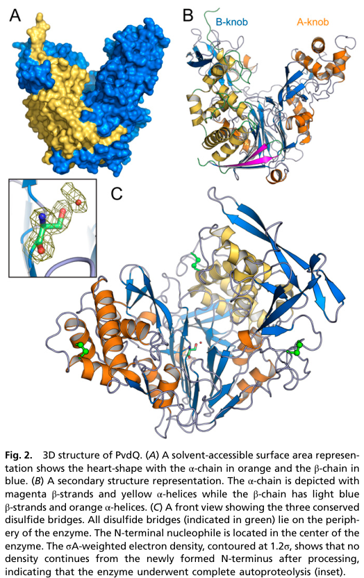

PvdQ is a periplasmic N-terminal nucleophile (Ntn) hydrolase of the peptidase S45 family (penicillin amidase fold) that acts as an acyl-homoserine lactone (AHL) acylase (EC 3.5.1.97). It is synthesized as an inactive precursor with a cleavable signal peptide and exported to the periplasm, where it undergoes autoproteolytic maturation into an alpha and a beta subunit; the N-terminal serine of the beta subunit is the catalytic nucleophile. The enzyme hydrolyzes the amide bond linking the acyl chain to the homoserine lactone moiety of N-acyl-L-homoserine lactones, releasing L-homoserine lactone and the corresponding free fatty acid, with a preference for long acyl chains (roughly 11-14 carbons). Through this activity PvdQ has two related physiological roles documented in Pseudomonas. In the pyoverdine biosynthetic pathway it acts as a maturation enzyme, removing a fatty-acyl (e.g. myristoyl/myristoleoyl) group from an acylated ferribactin/pyoverdine precursor in the periplasm, a step required to produce mature fluorescent pyoverdine siderophore. By cleaving long-chain AHL quorum-sensing signals it also confers quorum-quenching activity, degrading the diffusible signals that coordinate population-density-dependent gene expression in many Gram-negative bacteria.
| GO Term | Evidence | Action | Reason |
|---|---|---|---|
|
GO:0016787
hydrolase activity
|
IEA
GO_REF:0000002 |
MODIFY |
Summary: General hydrolase activity is correct but uninformatively broad for an enzyme whose activity is well defined as an amide hydrolase (AHL acylase).
Reason: PvdQ is an Ntn-hydrolase that cleaves the amide bond of N-acyl-homoserine lactones (EC 3.5.1.97). The more specific child term GO:0016811 captures this and is also annotated, so the bare grandparent should be replaced by the specific term.
Proposed replacements:
hydrolase activity, acting on carbon-nitrogen (but not peptide) bonds, in linear amides
|
|
GO:0016811
hydrolase activity, acting on carbon-nitrogen (but not peptide) bonds, in linear amides
|
IEA
GO_REF:0000002 |
ACCEPT |
Summary: Accurate molecular function. The AHL acylase reaction (EC 3.5.1.97) hydrolyzes the linear amide bond between the acyl chain and the homoserine lactone, which is precisely an amidohydrolase acting on a carbon-nitrogen bond in a linear amide.
Reason: This is the most specific molecular-function term available in GO for AHL acylase activity (there is no dedicated 'acyl-homoserine lactone acylase activity' term; note GO:0102007 is a lactonohydrolase, a different reaction). Consistent with UniProt EC 3.5.1.97 and the Ntn-hydrolase mechanism of the PvdQ family.
|
|
GO:0017000
antibiotic biosynthetic process
|
IEA
GO_REF:0000002 |
MODIFY |
Summary: Over-broad and mischaracterized BP inferred electronically from InterPro. PvdQ participates in biosynthesis of the siderophore pyoverdine, not of an antibiotic; its other documented role is quorum quenching via AHL degradation.
Reason: The IEA InterPro mapping applies a generic 'antibiotic biosynthetic process' to S45 peptidases (the family includes penicillin/beta-lactam acylases), but pyoverdine is an iron-chelating siderophore, not an antibiotic. The supported biological role of PvdQ is periplasmic maturation of the pyoverdine precursor. Replace with the specific pyoverdine biosynthesis term.
Proposed replacements:
pyoverdine biosynthetic process
|
|
GO:0042597
periplasmic space
|
IEA
GO_REF:0000044 |
ACCEPT |
Summary: Correct subcellular localization. PvdQ carries a Sec signal peptide and is exported to the periplasm, where it matures (autoproteolysis to alpha/beta subunits) and acts on its periplasmic substrates (acylated pyoverdine precursor; AHLs).
Reason: Supported by the UniProt signal-peptide annotation and the well-established periplasmic localization of PvdQ-family enzymes. The mapped term matches the UniProt subcellular location (SL-0200).
|
The research report should be a detailed narrative explaining the function, biological processes, and localization of the gene product. Citations should be given for all claims.
You should prioritize authoritative reviews and primary scientific literature when conducting research. You can supplement
this with annotations you find in gene/protein databases, but these can be outdated or inaccurate.
We are specifically interested in the primary function of the gene - for enzymes, what reaction is catalyzed, and what is the substrate specificity? For transporters, what is the substrate? For structural proteins or adapters, what is the broader structural role? For signaling molecules, what is the role in the pathway.
We are interested in where in or outside the cell the gene product carries out its function.
We are also interested in the signaling or biochemical pathways in which the gene functions. We are less interested in broad pleiotropic effects, except where these elucidate the precise role.
Include evidence where possible. We are interested in both experimental evidence as well as inference from structure, evolution, or bioinformatic analysis. Precise studies should be prioritized over high-throughput, where available.
The target protein PvdQ (UniProt Q88IU8; gene pvdQ; locus PP_2901) is annotated as an acyl-homoserine lactone acylase (AHL acylase; EC 3.5.1.97) belonging to the N-terminal nucleophile (Ntn) hydrolase / peptidase S45 family, produced as a precursor that maturates into α/β subunits. In the tool-retrieved literature set, direct experimental characterization in P. putida KT2440 is limited; most mechanistic/biochemical detail comes from the homologous, extensively studied PvdQ from Pseudomonas aeruginosa, which is commonly used as the reference for this enzyme family. All P. aeruginosa claims below are explicitly treated as orthology-based functional inference for P. putida Q88IU8 unless otherwise stated. (bokhove2010thequorumquenchingnacyl pages 1-2, bitzenhofer2024exploringengineeredvesiculation pages 10-11)
Gram-negative bacteria frequently coordinate group behaviors (e.g., biofilm maturation, secreted factors) using N-acyl-L-homoserine lactones (AHLs) as diffusible QS signals. Quorum quenching refers to chemical disruption of QS signals; enzymatic QQ includes AHL lactonases (ring opening) and AHL acylases (amide-bond cleavage). (utari2017decipheringphysiologicalfunctions pages 2-4)
AHL acylases (EC 3.5.1.97) catalyze irreversible amide hydrolysis of AHLs, producing homoserine lactone and the corresponding fatty acid. This chemistry is central to the established function of PvdQ-family enzymes and is emphasized in modern engineering studies focused on measuring real-time homoserine lactone product formation. (sompiyachoke2024engineeringquorumquenching pages 1-5, sompiyachoke2024engineeringquorumquenching pages 9-12)
PvdQ-family enzymes are Ntn hydrolases: they are typically translated as inactive precursors that undergo autoproteolysis to generate active α- and β-subunits, exposing an N-terminal catalytic nucleophile (often Ser/Thr/Cys) at the start of the β-chain. This activation mechanism and the α/β architecture are highlighted for AHL-acylase families in authoritative reviews. (utari2017decipheringphysiologicalfunctions pages 2-4)
Most defensible functional assignment for P. putida Q88IU8 based on domain/family identity and strong homology is:
This assignment is mechanistically anchored by high-resolution structural and catalytic data for homologous PvdQ (see below), but direct enzymology for KT2440 Q88IU8 was not retrieved in this run. (bokhove2010thequorumquenchingnacyl pages 1-2, bokhove2010thequorumquenchingnacyl pages 2-3)
A landmark structure solved at 1.8 Å demonstrated that PvdQ is an α/β heterodimeric Ntn hydrolase that undergoes complete autoproteolysis into an α-chain (~171 aa) and β-chain (~546 aa); the N-terminal serine of the β-chain (Serβ1) is the catalytic nucleophile. (bokhove2010thequorumquenchingnacyl pages 2-3)
The same work showed a deep hydrophobic substrate pocket specialized for accommodating long fatty-acid–like acyl chains of AHLs (e.g., C12), including an induced-fit gate involving Pheβ24 that opens upon substrate/product binding. (bokhove2010thequorumquenchingnacyl pages 2-3)
Visual structural evidence in that study includes: (i) the overall α/β heterodimer fold, (ii) the long-chain binding pocket with bound ligands, and (iii) active-site details and a covalent intermediate consistent with Ntn-hydrolase catalysis. (bokhove2010thequorumquenchingnacyl media 88afd601, bokhove2010thequorumquenchingnacyl media b51a75cc, bokhove2010thequorumquenchingnacyl media 58576db1, bokhove2010thequorumquenchingnacyl media 35e54e16)
Multiple sources describe PvdQ as periplasmic in the reference system and link this to a signal peptide / Sec-dependent export and maturation to α/β subunits characteristic of Ntn hydrolases. (rice2010characterizationofan pages 32-37, drake2011structuralcharacterizationand pages 1-2, utari2017decipheringphysiologicalfunctions pages 2-4)
The disulfide-rich nature of the crystallized enzyme is also consistent with periplasmic localization (oxidizing environment), and conservation of these features among Pseudomonas homologs is emphasized in the structural work. (bokhove2010thequorumquenchingnacyl pages 2-3)
For P. putida KT2440 Q88IU8, periplasmic localization is therefore best treated as a strong inference from family biology and precursor annotation; however, no KT2440-specific localization experiment was retrieved here. (utari2017decipheringphysiologicalfunctions pages 2-4, bokhove2010thequorumquenchingnacyl pages 2-3)
PvdQ is widely discussed as a protein positioned at the intersection of:
Because the gene name pvdQ is embedded in “pyoverdine (pvd)” gene clusters in fluorescent pseudomonads, these roles are often discussed together; nonetheless, direct demonstration of pyoverdine precursor deacylation by Q88IU8 in KT2440 was not retrieved. (drake2011structuralcharacterizationand pages 1-2, bitzenhofer2024exploringengineeredvesiculation pages 10-11)
A 2024 Microbial Biotechnology study investigating engineered vesiculation in P. putida KT2440 reported that downregulation of pvdQ by CRISPRi and a pvdQ deletion mutant both yielded increased signals consistent with enhanced outer membrane vesicle (OMV) production (hypervesiculation), measured across vesiculation assays (protein/lipid signals and other OMV-related readouts in their screen). This establishes that KT2440 pvdQ (PP_2901) measurably affects envelope/vesicle physiology under the tested conditions, though it does not identify the molecular substrate(s) in KT2440. (bitzenhofer2024exploringengineeredvesiculation pages 10-11)
A 2024 Protein Science study engineered AHL acylases (including PvdQ) to improve properties important for real-world use (e.g., coatings, solvent exposure). Key advances include:
Although the engineered PvdQ used in this study is not explicitly stated (in the extracted evidence) to be derived from P. putida KT2440, the work is highly relevant to PvdQ-family enzymes, and it provides current expert-level mechanistic framing and performance metrics. (sompiyachoke2024engineeringquorumquenching pages 1-5, sompiyachoke2024engineeringquorumquenching pages 9-12)
The 2024 engineering study also reports crystallographic capture of acyl-enzyme intermediates in related AHL acylases (and discusses analogous intermediates for PvdQ), supporting the Ntn-hydrolase catalytic framework in which the β-chain N-terminal serine participates directly in catalysis. (sompiyachoke2024engineeringquorumquenching pages 18-22)
The 2024 vesiculation study provides a current KT2440-specific experimental anchor: pvdQ is a manipulable determinant influencing OMV production and may therefore be relevant in industrial chassis strain engineering where vesiculation can affect secretion, stress tolerance, and product yields. (bitzenhofer2024exploringengineeredvesiculation pages 10-11)
PvdQ is frequently treated as a prototype enzyme for non-antibiotic anti-virulence strategies: rather than killing bacteria, it reduces QS signal availability by irreversible AHL cleavage, which can suppress QS-regulated phenotypes such as biofilm-associated traits (general framing). (utari2017decipheringphysiologicalfunctions pages 2-4)
A practical, formulation-oriented direction is to incorporate AHL acylases into materials and coatings (e.g., silicone-based formulations). The 2024 engineering study explicitly targeted this need, demonstrating improved enzyme robustness after formulation in a silicone paint base. (sompiyachoke2024engineeringquorumquenching pages 9-12)
Engineering improvements that increase thermal stability, solvent resistance, and coating compatibility directly address deployment constraints for immobilized enzymes on device or industrial surfaces. The 2024 study’s stabilizing substitutions (PROSS-designed variants) provide a concrete example of this translational path. (sompiyachoke2024engineeringquorumquenching pages 5-9, sompiyachoke2024engineeringquorumquenching pages 9-12)
The 2024 KT2440 vesiculation work used pvdQ manipulation as part of a chassis-optimization strategy; pvdQ deletion increased vesicle-associated protein and lipid signals, suggesting a potential lever for engineering envelope/secretory phenotypes in industrial P. putida KT2440 contexts. (bitzenhofer2024exploringengineeredvesiculation pages 10-11)
A focused review on AHL acylases emphasizes that these enzymes are broadly distributed across taxa and that substrate specificity (often chain-length preference) and cellular compartmentalization (frequently periplasmic maturation/export) shape physiological roles. This review explicitly uses PvdQ as an exemplar of Ntn-hydrolase AHL acylases, describing common maturation logic (precursor → α/β) and structural determinants of long-chain specificity. (utari2017decipheringphysiologicalfunctions pages 2-4)
High-impact primary structural biology work positions PvdQ as a canonical example of a quorum-quenching AHL acylase with an “unusual” substrate-binding pocket adapted to long acyl chains, providing the mechanistic explanation for specificity. (bokhove2010thequorumquenchingnacyl pages 2-3)
Key quantitative points extracted from the retrieved literature:
Despite strong functional inference from family/orthology, the retrieved corpus in this run did not include:
Accordingly, the report separates:
The following table consolidates functional annotation elements and explicitly flags whether evidence is direct for KT2440 or inferred from homologs.
| Aspect | Key details | Key references | URL/DOI |
|---|---|---|---|
| Reaction | UniProt Q88IU8 / pvdQ / PP_2901 is annotated as acyl-homoserine lactone acylase PvdQ (EC 3.5.1.97). The catalyzed reaction is amide-bond hydrolysis of N-acyl-L-homoserine lactones to release homoserine lactone + the corresponding fatty acid; this is the established chemistry for PvdQ-family AHL acylases, but not directly biochemically demonstrated for the P. putida KT2440 protein in the retrieved literature. Direct enzymology is from homologous P. aeruginosa PvdQ and engineered PvdQ studies (bokhove2010thequorumquenchingnacyl pages 1-2, sompiyachoke2024engineeringquorumquenching pages 1-5). | Bokhove 2010, PNAS; Sompiyachoke & Elias 2024, Protein Science | https://doi.org/10.1073/pnas.0911839107; https://doi.org/10.1002/pro.4954 |
| Substrates | PvdQ shows preference for long-chain AHLs. Structural and biochemical work on homologous P. aeruginosa PvdQ supports activity toward C12-HSL and 3-oxo-C12-HSL; review/engineering sources summarize preference for acyl chains >8 carbons and earlier reports of activity on C8-HSL, C12-HSL, 3-oxo-C12-HSL but not C4-HSL in that species. For Q88IU8 in P. putida, substrate range is inferred by homology, not directly shown in the retrieved primary literature (clevenger2015investigationandengineering pages 28-34, utari2017decipheringphysiologicalfunctions pages 2-4, bokhove2010thequorumquenchingnacyl pages 1-2, sompiyachoke2024engineeringquorumquenching pages 1-5, sompiyachoke2024engineeringquorumquenching pages 5-9). | Bokhove 2010, PNAS; Utari et al. 2017, Front. Microbiol.; Sompiyachoke & Elias 2024, Protein Science | https://doi.org/10.1073/pnas.0911839107; https://doi.org/10.3389/fmicb.2017.01123; https://doi.org/10.1002/pro.4954 |
| Mechanism | PvdQ is an N-terminal nucleophile (Ntn) hydrolase. The mature catalytic nucleophile is Serβ1; the oxyanion hole includes Valβ70 and Asnβ269/278 (numbering differs slightly by source). A covalent acyl-enzyme intermediate and induced-fit opening of the acyl pocket gated by Pheβ24 were observed in structural studies. A high-resolution homolog structure was solved at 1.8 Å. These mechanistic data are from P. aeruginosa PvdQ / engineered PvdQ, and are inferred for P. putida Q88IU8 because UniProt/domain architecture matches the same S45/Ntn-hydrolase family (bokhove2010thequorumquenchingnacyl pages 2-3, bokhove2010thequorumquenchingnacyl pages 1-2, sompiyachoke2024engineeringquorumquenching pages 18-22, bokhove2010thequorumquenchingnacyl media 88afd601). | Bokhove 2010, PNAS; Sompiyachoke & Elias 2024, Protein Science | https://doi.org/10.1073/pnas.0911839107; https://doi.org/10.1002/pro.4954 |
| Processing | PvdQ is synthesized as a single precursor that undergoes autoproteolytic maturation to an α/β heterodimer. Reported sizes for the homologous mature enzyme are approximately α-chain 171 aa / ~18 kDa and β-chain 546 aa / ~60 kDa, generated after excision of a short linker/prosegment (including a reported 23-residue prosegment in structural work). This processing is experimentally demonstrated for P. aeruginosa PvdQ and strongly supported for P. putida Q88IU8 by the UniProt precursor annotation and conserved family assignment, but direct maturation data for KT2440 were not retrieved (bokhove2010thequorumquenchingnacyl pages 2-3, rice2010characterizationofan pages 32-37, utari2017decipheringphysiologicalfunctions pages 2-4, bokhove2010thequorumquenchingnacyl pages 1-2). | Bokhove 2010, PNAS; Rice 2010 thesis; Utari et al. 2017, Front. Microbiol. | https://doi.org/10.1073/pnas.0911839107; https://doi.org/10.3389/fmicb.2017.01123 |
| Localization | Multiple lines of homolog evidence indicate periplasmic localization: presence of an N-terminal signal peptide / Sec-type export motif, disulfide-bond-rich mature structure, and explicit reports that PvdQ acts as a periplasmic hydrolase. For P. putida Q88IU8, localization is therefore best interpreted as periplasmic, inferred from strong homology and precursor/signal-peptide annotation, but no direct KT2440 localization experiment was retrieved (bokhove2010thequorumquenchingnacyl pages 2-3, rice2010characterizationofan pages 32-37, drake2011structuralcharacterizationand pages 1-2, rice2010characterizationofan pages 37-42, utari2017decipheringphysiologicalfunctions pages 2-4). | Rice 2010 thesis; Drake & Gulick 2011, ACS Chem. Biol.; Bokhove 2010, PNAS | https://doi.org/10.1021/cb2002973; https://doi.org/10.1073/pnas.0911839107 |
| Pathway role | Important disambiguation: the symbol pvdQ is associated with pyoverdine gene clusters in fluorescent pseudomonads, but the best direct pathway evidence is from P. aeruginosa, where PvdQ removes a myristoyl/fatty-acyl group from an acylated pyoverdine precursor (PVDIq) in the periplasm, linking the enzyme to pyoverdine maturation as well as quorum-quenching. For P. putida KT2440 Q88IU8, a pyoverdine-related role is plausible by orthology/name, but the retrieved literature did not provide direct biochemical demonstration in KT2440 (clevenger2015investigationandengineering pages 28-34, drake2011structuralcharacterizationand pages 1-2). | Drake & Gulick 2011, ACS Chem. Biol.; Clevenger 2015 thesis | https://doi.org/10.1021/cb2002973; https://doi.org/10.15781/t2j35z |
| Evidence in P. putida | Direct species-specific evidence for KT2440 is limited in the retrieved set. A 2024 study experimentally deleted pvdQ in P. putida KT2440 and found that loss/downregulation caused increased outer-membrane-vesicle-associated protein and lipid signal (hypervesiculation phenotype) in a vesiculation screen. This supports that PP_2901 is an active cellular determinant in envelope/vesicle physiology, but it does not directly establish its biochemical substrate or reaction in KT2440 (bitzenhofer2024exploringengineeredvesiculation pages 10-11). | Bitzenhofer et al. 2024, Microbial Biotechnology | https://doi.org/10.1111/1751-7915.14312 |
| Evidence in P. aeruginosa / other | The homologous P. aeruginosa enzyme is extensively characterized: 1.8 Å structure; long-chain AHL-binding pocket; α/β maturation; Serβ1 catalytic nucleophile; role in pyoverdine precursor deacylation; quorum-quenching activity against long-chain AHLs. Engineering work further quantified performance: WT-PvdQ kcat/KM ~2.22×10^4 s^-1 M^-1 for 3-oxo-C12-HSL and ~1.75×10^3 s^-1 M^-1 for C8-HSL in one 2024 assay format; designed variants increased Tm by 9.2, 11.7, and 13.2 °C and improved solvent/coating robustness. These data are the main basis for functional inference to Q88IU8 (bokhove2010thequorumquenchingnacyl pages 2-3, drake2011structuralcharacterizationand pages 1-2, bokhove2010thequorumquenchingnacyl pages 1-2, sompiyachoke2024engineeringquorumquenching pages 9-12, sompiyachoke2024engineeringquorumquenching pages 5-9). | Bokhove 2010, PNAS; Drake & Gulick 2011, ACS Chem. Biol.; Sompiyachoke & Elias 2024, Protein Science | https://doi.org/10.1073/pnas.0911839107; https://doi.org/10.1021/cb2002973; https://doi.org/10.1002/pro.4954 |
Table: This table summarizes the most relevant functional annotation points for UniProt Q88IU8 (Pseudomonas putida KT2440 pvdQ/PP_2901), separating direct evidence in P. putida from stronger mechanistic and biochemical evidence available for homologous PvdQ proteins, especially from P. aeruginosa.
References
(bokhove2010thequorumquenchingnacyl pages 1-2): Marcel Bokhove, Pol Nadal Jimenez, Wim J. Quax, and Bauke W. Dijkstra. The quorum-quenching n-acyl homoserine lactone acylase pvdq is an ntn-hydrolase with an unusual substrate-binding pocket. Proceedings of the National Academy of Sciences, 107:686-691, Dec 2010. URL: https://doi.org/10.1073/pnas.0911839107, doi:10.1073/pnas.0911839107. This article has 182 citations and is from a highest quality peer-reviewed journal.
(bitzenhofer2024exploringengineeredvesiculation pages 10-11): Nora Lisa Bitzenhofer, Carolin Höfel, Stephan Thies, Andrea Jeanette Weiler, Christian Eberlein, Hermann J. Heipieper, Renu Batra‐Safferling, Pia Sundermeyer, Thomas Heidler, Carsten Sachse, Tobias Busche, Jörn Kalinowski, Thomke Belthle, Thomas Drepper, Karl‐Erich Jaeger, and Anita Loeschcke. Exploring engineered vesiculation by pseudomonas putida kt2440 for natural product biosynthesis. Microbial Biotechnology, Jul 2024. URL: https://doi.org/10.1111/1751-7915.14312, doi:10.1111/1751-7915.14312. This article has 13 citations and is from a peer-reviewed journal.
(utari2017decipheringphysiologicalfunctions pages 2-4): Putri D. Utari, Jan Vogel, and Wim J. Quax. Deciphering physiological functions of ahl quorum quenching acylases. Frontiers in Microbiology, Jun 2017. URL: https://doi.org/10.3389/fmicb.2017.01123, doi:10.3389/fmicb.2017.01123. This article has 107 citations and is from a peer-reviewed journal.
(sompiyachoke2024engineeringquorumquenching pages 1-5): Kitty Sompiyachoke and Mikael H. Elias. Engineering quorum quenching acylases with improved kinetic and biochemical properties. Protein Science : A Publication of the Protein Society, Mar 2024. URL: https://doi.org/10.1002/pro.4954, doi:10.1002/pro.4954. This article has 14 citations.
(sompiyachoke2024engineeringquorumquenching pages 9-12): Kitty Sompiyachoke and Mikael H. Elias. Engineering quorum quenching acylases with improved kinetic and biochemical properties. Protein Science : A Publication of the Protein Society, Mar 2024. URL: https://doi.org/10.1002/pro.4954, doi:10.1002/pro.4954. This article has 14 citations.
(bokhove2010thequorumquenchingnacyl pages 2-3): Marcel Bokhove, Pol Nadal Jimenez, Wim J. Quax, and Bauke W. Dijkstra. The quorum-quenching n-acyl homoserine lactone acylase pvdq is an ntn-hydrolase with an unusual substrate-binding pocket. Proceedings of the National Academy of Sciences, 107:686-691, Dec 2010. URL: https://doi.org/10.1073/pnas.0911839107, doi:10.1073/pnas.0911839107. This article has 182 citations and is from a highest quality peer-reviewed journal.
(bokhove2010thequorumquenchingnacyl media 88afd601): Marcel Bokhove, Pol Nadal Jimenez, Wim J. Quax, and Bauke W. Dijkstra. The quorum-quenching n-acyl homoserine lactone acylase pvdq is an ntn-hydrolase with an unusual substrate-binding pocket. Proceedings of the National Academy of Sciences, 107:686-691, Dec 2010. URL: https://doi.org/10.1073/pnas.0911839107, doi:10.1073/pnas.0911839107. This article has 182 citations and is from a highest quality peer-reviewed journal.
(bokhove2010thequorumquenchingnacyl media b51a75cc): Marcel Bokhove, Pol Nadal Jimenez, Wim J. Quax, and Bauke W. Dijkstra. The quorum-quenching n-acyl homoserine lactone acylase pvdq is an ntn-hydrolase with an unusual substrate-binding pocket. Proceedings of the National Academy of Sciences, 107:686-691, Dec 2010. URL: https://doi.org/10.1073/pnas.0911839107, doi:10.1073/pnas.0911839107. This article has 182 citations and is from a highest quality peer-reviewed journal.
(bokhove2010thequorumquenchingnacyl media 58576db1): Marcel Bokhove, Pol Nadal Jimenez, Wim J. Quax, and Bauke W. Dijkstra. The quorum-quenching n-acyl homoserine lactone acylase pvdq is an ntn-hydrolase with an unusual substrate-binding pocket. Proceedings of the National Academy of Sciences, 107:686-691, Dec 2010. URL: https://doi.org/10.1073/pnas.0911839107, doi:10.1073/pnas.0911839107. This article has 182 citations and is from a highest quality peer-reviewed journal.
(bokhove2010thequorumquenchingnacyl media 35e54e16): Marcel Bokhove, Pol Nadal Jimenez, Wim J. Quax, and Bauke W. Dijkstra. The quorum-quenching n-acyl homoserine lactone acylase pvdq is an ntn-hydrolase with an unusual substrate-binding pocket. Proceedings of the National Academy of Sciences, 107:686-691, Dec 2010. URL: https://doi.org/10.1073/pnas.0911839107, doi:10.1073/pnas.0911839107. This article has 182 citations and is from a highest quality peer-reviewed journal.
(rice2010characterizationofan pages 32-37): LJ Rice. Characterization of an ntn-hydrolase, pvdq, and an l-ornithine n5-monooxygenase, pvda, involved in pyoverdine biosynthesis in pseudomonas aeruginosa …. Unknown journal, 2010.
(drake2011structuralcharacterizationand pages 1-2): Eric J. Drake and Andrew M. Gulick. Structural characterization and high-throughput screening of inhibitors of pvdq, an ntn hydrolase involved in pyoverdine synthesis. ACS chemical biology, 6 11:1277-86, Nov 2011. URL: https://doi.org/10.1021/cb2002973, doi:10.1021/cb2002973. This article has 98 citations and is from a domain leading peer-reviewed journal.
(clevenger2015investigationandengineering pages 28-34): Kenneth David Clevenger. Investigation and engineering of pvdq, a pseudomonas aeruginosa enzyme at the nexus of quorum sensing and iron uptake pathways. Unknown, Jan 2015. URL: https://doi.org/10.15781/t2j35z, doi:10.15781/t2j35z. This article has 0 citations.
(sompiyachoke2024engineeringquorumquenching pages 5-9): Kitty Sompiyachoke and Mikael H. Elias. Engineering quorum quenching acylases with improved kinetic and biochemical properties. Protein Science : A Publication of the Protein Society, Mar 2024. URL: https://doi.org/10.1002/pro.4954, doi:10.1002/pro.4954. This article has 14 citations.
(sompiyachoke2024engineeringquorumquenching pages 18-22): Kitty Sompiyachoke and Mikael H. Elias. Engineering quorum quenching acylases with improved kinetic and biochemical properties. Protein Science : A Publication of the Protein Society, Mar 2024. URL: https://doi.org/10.1002/pro.4954, doi:10.1002/pro.4954. This article has 14 citations.
(rice2010characterizationofan pages 37-42): LJ Rice. Characterization of an ntn-hydrolase, pvdq, and an l-ornithine n5-monooxygenase, pvda, involved in pyoverdine biosynthesis in pseudomonas aeruginosa …. Unknown journal, 2010.

id: Q88IU8
gene_symbol: pvdQ
product_type: PROTEIN
status: DRAFT
taxon:
id: NCBITaxon:160488
label: Pseudomonas putida (strain ATCC 47054 / DSM 6125 / CFBP 8728 / NCIMB 11950 / KT2440)
description: PvdQ is a periplasmic N-terminal nucleophile (Ntn) hydrolase of the peptidase S45 family (penicillin amidase fold) that acts as an acyl-homoserine lactone (AHL) acylase (EC 3.5.1.97). It is synthesized as an inactive precursor with a cleavable signal peptide and exported to the periplasm, where it undergoes autoproteolytic maturation into an alpha and a beta subunit; the N-terminal serine of the beta subunit is the catalytic nucleophile. The enzyme hydrolyzes the amide bond linking the acyl chain to the homoserine lactone moiety of N-acyl-L-homoserine lactones, releasing L-homoserine lactone and the corresponding free fatty acid, with a preference for long acyl chains (roughly 11-14 carbons). Through this activity PvdQ has two related physiological roles documented in Pseudomonas. In the pyoverdine biosynthetic pathway it acts as a maturation enzyme, removing a fatty-acyl (e.g. myristoyl/myristoleoyl) group from an acylated ferribactin/pyoverdine precursor in the periplasm, a step required to produce mature fluorescent pyoverdine siderophore. By cleaving long-chain AHL quorum-sensing signals it also confers quorum-quenching activity, degrading the diffusible signals that coordinate population-density-dependent gene expression in many Gram-negative bacteria.
references:
- id: GO_REF:0000002
title: Gene Ontology annotation through association of InterPro records with GO terms
findings: []
- id: GO_REF:0000044
title: Gene Ontology annotation based on UniProtKB/Swiss-Prot Subcellular Location vocabulary mapping, accompanied by conservative changes to GO terms applied by UniProt
findings: []
- id: PMID:12534463
title: Complete genome sequence and comparative analysis of the metabolically versatile Pseudomonas putida KT2440.
findings: []
reference_review:
relevance: LOW
correctness: VERIFIED
review_notes: Genome sequencing paper for P. putida KT2440; source of the PP_2901 gene model but does not functionally characterize PvdQ.
- id: file:PSEPK/pvdQ/pvdQ-deep-research-falcon.md
title: Deep research report (falcon) for pvdQ (Q88IU8)
findings: []
- id: PMID:20080736
title: The quorum-quenching N-acyl homoserine lactone acylase PvdQ is an Ntn-hydrolase with an unusual substrate-binding pocket.
findings: []
reference_review:
relevance: HIGH
correctness: VERIFIED
review_notes: >-
Citation-integrity fix: this reference was originally entered as PMID:20133719,
which actually resolves to an unrelated paper ("Deceptive chemical signals
induced by a plant virus attract insect vectors") and was a wrong identifier.
The intended source is Bokhove et al. 2010 PNAS structural study of P. aeruginosa
PvdQ ("The quorum-quenching N-acyl homoserine lactone acylase PvdQ is an
Ntn-hydrolase with an unusual substrate-binding pocket", doi:10.1073/pnas.0911839107),
which establishes the Ntn-hydrolase fold, alpha/beta maturation, Ser-beta1
nucleophile, and long-chain AHL specificity; orthology basis for the P. putida
ortholog. The correct PMID was recovered from the DOI via doi_to_pmid and
independently verified against PubMed (PMID:20080736 -> matching title/DOI).
The WRONG_IDENTIFIER code records that the original PMID was incorrect; the
replacement PMID:20080736 is VERIFIED on-topic.
core_functions:
- description: Acyl-homoserine lactone acylase (Ntn-hydrolase) that hydrolyzes the amide bond of long-chain N-acyl-L-homoserine lactones, releasing L-homoserine lactone and the corresponding fatty acid.
supported_by:
- reference_id: PMID:20080736
molecular_function:
id: GO:0016811
label: hydrolase activity, acting on carbon-nitrogen (but not peptide) bonds, in linear amides
- description: Periplasmic maturation of the pyoverdine siderophore by removing the fatty-acyl group from an acylated pyoverdine/ferribactin precursor.
supported_by:
- reference_id: PMID:20080736
directly_involved_in:
- id: GO:0002049
label: pyoverdine biosynthetic process
locations:
- id: GO:0042597
label: periplasmic space
existing_annotations:
- term:
id: GO:0016787
label: hydrolase activity
evidence_type: IEA
original_reference_id: GO_REF:0000002
qualifier: enables
review:
summary: General hydrolase activity is correct but uninformatively broad for an enzyme whose activity is well defined as an amide hydrolase (AHL acylase).
action: MODIFY
reason: PvdQ is an Ntn-hydrolase that cleaves the amide bond of N-acyl-homoserine lactones (EC 3.5.1.97). The more specific child term GO:0016811 captures this and is also annotated, so the bare grandparent should be replaced by the specific term.
proposed_replacement_terms:
- id: GO:0016811
label: hydrolase activity, acting on carbon-nitrogen (but not peptide) bonds, in linear amides
- term:
id: GO:0016811
label: hydrolase activity, acting on carbon-nitrogen (but not peptide) bonds, in linear amides
evidence_type: IEA
original_reference_id: GO_REF:0000002
qualifier: enables
review:
summary: Accurate molecular function. The AHL acylase reaction (EC 3.5.1.97) hydrolyzes the linear amide bond between the acyl chain and the homoserine lactone, which is precisely an amidohydrolase acting on a carbon-nitrogen bond in a linear amide.
action: ACCEPT
reason: This is the most specific molecular-function term available in GO for AHL acylase activity (there is no dedicated 'acyl-homoserine lactone acylase activity' term; note GO:0102007 is a lactonohydrolase, a different reaction). Consistent with UniProt EC 3.5.1.97 and the Ntn-hydrolase mechanism of the PvdQ family.
- term:
id: GO:0017000
label: antibiotic biosynthetic process
evidence_type: IEA
original_reference_id: GO_REF:0000002
qualifier: involved_in
review:
summary: Over-broad and mischaracterized BP inferred electronically from InterPro. PvdQ participates in biosynthesis of the siderophore pyoverdine, not of an antibiotic; its other documented role is quorum quenching via AHL degradation.
action: MODIFY
reason: The IEA InterPro mapping applies a generic 'antibiotic biosynthetic process' to S45 peptidases (the family includes penicillin/beta-lactam acylases), but pyoverdine is an iron-chelating siderophore, not an antibiotic. The supported biological role of PvdQ is periplasmic maturation of the pyoverdine precursor. Replace with the specific pyoverdine biosynthesis term.
proposed_replacement_terms:
- id: GO:0002049
label: pyoverdine biosynthetic process
- term:
id: GO:0042597
label: periplasmic space
evidence_type: IEA
original_reference_id: GO_REF:0000044
qualifier: located_in
review:
summary: Correct subcellular localization. PvdQ carries a Sec signal peptide and is exported to the periplasm, where it matures (autoproteolysis to alpha/beta subunits) and acts on its periplasmic substrates (acylated pyoverdine precursor; AHLs).
action: ACCEPT
reason: Supported by the UniProt signal-peptide annotation and the well-established periplasmic localization of PvdQ-family enzymes. The mapped term matches the UniProt subcellular location (SL-0200).
proposed_new_terms: []
{kind=link}